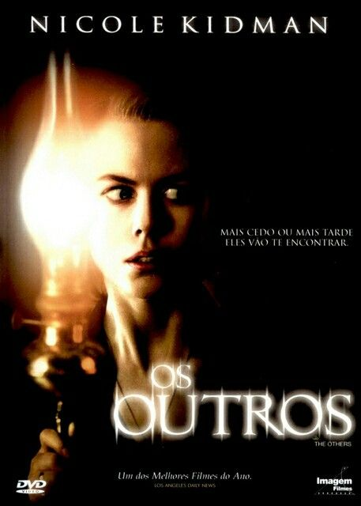
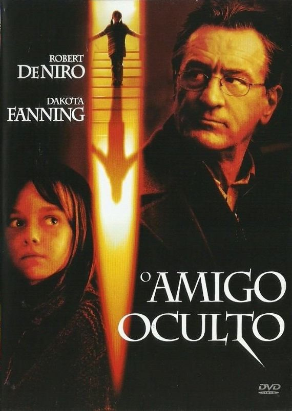
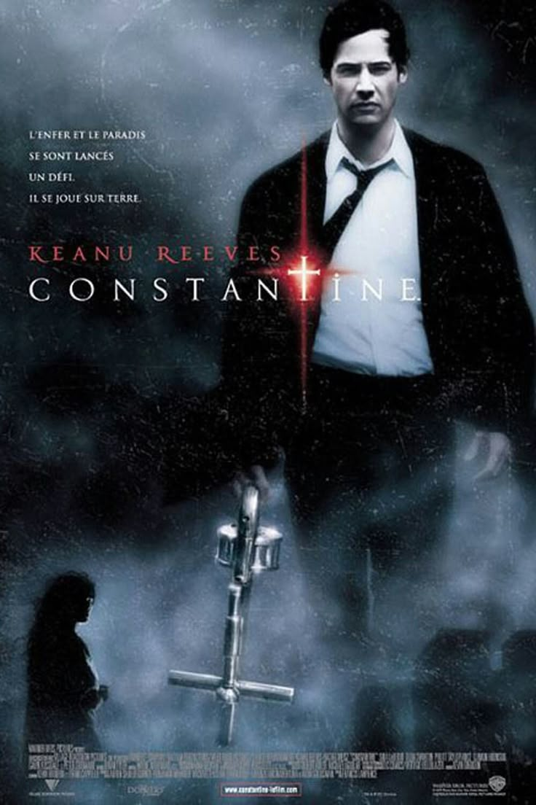
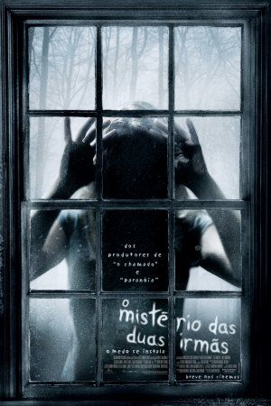
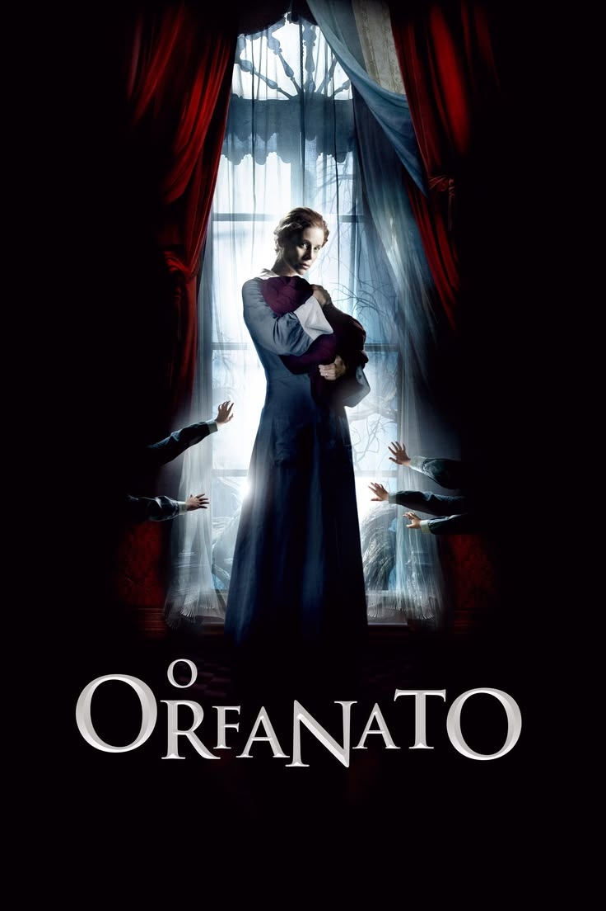

Top 5 filmes de terror dos anos 2000
Para comemorar o mês das bruxas, aqui vai uma lista com os melhores filmes de terror dos anos 2000!

Durante a 2ª Guerra Mundial, Grace (Nicole Kidman) decide por se mudar, juntamente com seus dois filhos, para uma mansão isolada na ilha de Jersey, a fim de esperar que seu marido retorne da guerra. Como seus filhos possuem uma estranha doença que os impedem de receber diretamente a luz do sol, a casa onde vivem está sempre em total escuridão. ...

David Callaway (Robert De Niro) é um homem que enviuvou recentemente, vivendo agora apenas com sua filha Emily (Dakota Fanning), de 9 anos. Emily cria um amigo imaginário chamado Charlie, com quem costuma brincar de esconde-esconde. Só que aos poucos Charlie se revela como alguém malvado e vingativo, o que ameaça a própria família Callaway.

John Constantine (Keanu Reeves) é um experiente ocultista e exorcista, que literalmente chegou ao inferno. Juntamente com Angela Dodson (Rachel Weisz), uma policial cética, ele investiga o misterioso assassinato da irmã gêmea dela, Isabel. As investigações levam a dupla a um mundo sombrio, em que precisam lidar com demônios e anjos malvados.

Após sua mãe morrer em um incêndio, a jovem Anna (Emily Browning) tenta o suicídio. Como resultado, vai parar em uma clínica para tratamento. Dez meses depois, Anna continua sem lembrar o que aconteceu na noite em que a mãe morreu. Apesar disto, o dr. Silberling (Dean Paul Gibson) resolve lhe dar alta. Anna é então levada de volta para casa ...

Laura (Belén Rueda) passou os anos mais felizes de sua vida em um orfanato, onde recebeu os cuidados de uma equipe e de outros companheiros órfãos, a quem considerava como se fossem seus irmãos e irmãs verdadeiros. Agora, 30 anos depois, ela retornou ao local com seu marido Carlos (Fernando Cayo) e seu filho Simón (Roger Príncep), de 7 anos. ....
Como se preparar para uma maratona de filmes de terror?
Antes de encerrarmos, confira algumas dicas para tornar sua maratona ainda melhor!
- Escolha os filmes: selecione histórias que despertem seu interesse e prepare sua lista de reprodução.
- Prepare os lanches: faça pipoca, separe doces e deixe suas bebidas favoritas por perto.
- Apague as luzes: deixe o ambiente escuro para entrar no clima de suspense.
- Prepare o ambiente: organize almofadas e cobertores para ficar confortável durante os filmes.
- Convide os amigos: assistir acompanhado pode deixar a experiência ainda mais divertida.
- Prepare-se para os sustos: aumente o volume, preste atenção aos detalhes e tente não gritar!